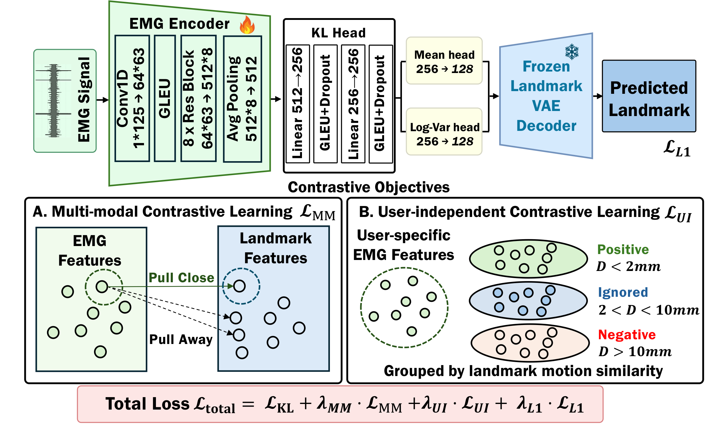
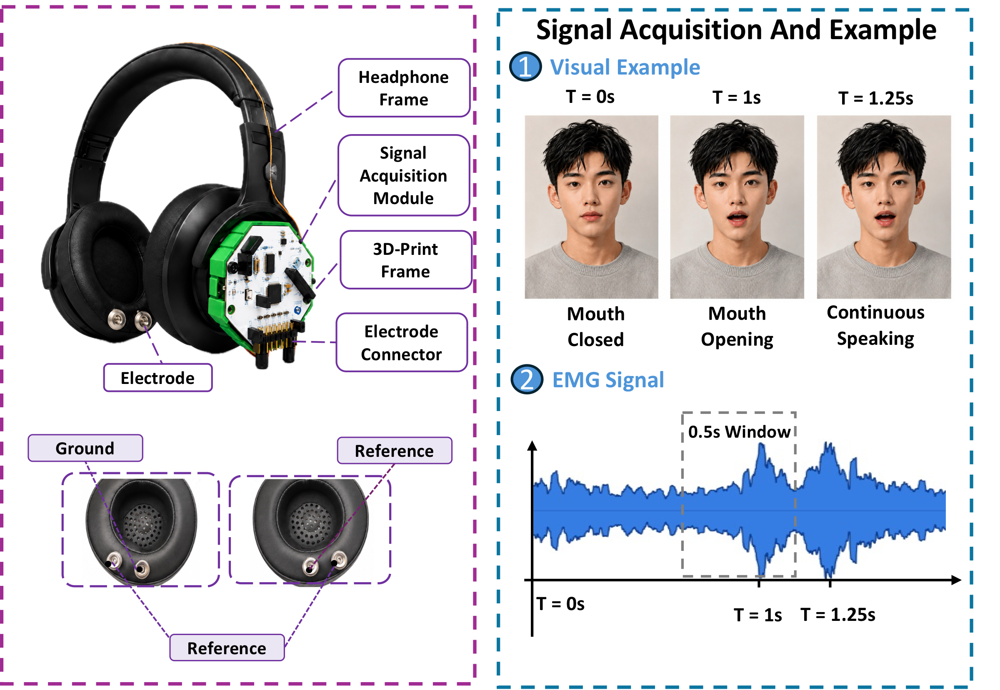
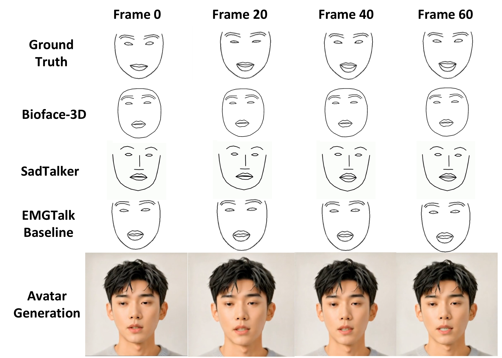
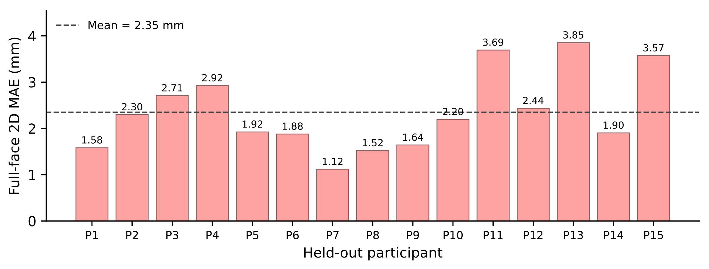
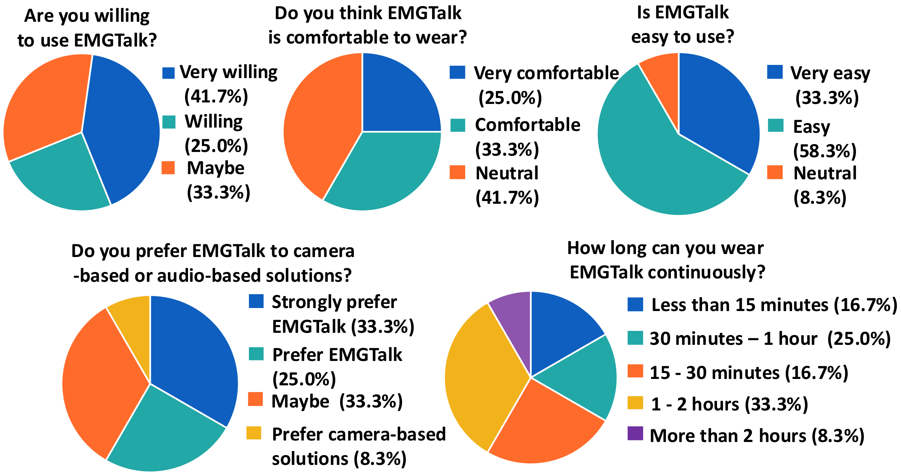

First wearable EMG talking-face system
Ear-centered single-channel EMG in a headphone form factor reconstructs continuous lip and mouth motion — not just discrete facial gestures.
Wearable Biosensing · Facial Motion Reconstruction · Talking Face Generation
Wearable EMG sensing enables camera-free and noise-resilient talking-face generation by predicting facial motion from ear-centered biosignals — achieving 2.00 mm full-face landmark error on unseen users without a camera or microphone at inference.
University of Oklahoma · Replace with final affiliation list
Talking face generation has attracted significant attention for applications such as teleconferencing and virtual avatars. Traditional methods rely on either cameras or audio: camera-based approaches require an unobstructed view of the face and raise privacy concerns, whereas audio-driven approaches degrade under environmental noise, weak speech signals, and interfering speakers. Facial Electromyography (EMG) offers an appealing alternative; however, prior EMG-based systems have been largely limited to discrete facial gestures, controlled expression tasks, or calibration-dependent facial tracking. To address these limitations, we present EMGTalk, to the best of our knowledge, the first wearable EMG-based talking face generation system that reconstructs continuous speech-related facial motion from ear-centered EMG in a user-independent manner. EMGTalk follows a two-stage design: a novel EMG-to-landmark motion reconstruction stage predicts facial landmarks from ear-centered EMG, and a frozen off-the-shelf landmark-conditioned renderer uses the reconstructed landmarks for talking-face synthesis.
EMGTalk uses a landmark-guided EMG representation learning framework: a landmark Variational Autoencoder (VAE) first learns a compact facial-motion latent space from ground-truth facial landmarks, and an EMG VAE then predicts the corresponding latent representation from synchronized ear-centered EMG signals. Contrastive learning further aligns EMG representations with facial-motion representations, and a batch-wise cross-subject objective encourages EMG embeddings from different users to be organized according to facial-motion similarity. Integrated into a headphone form factor, the system provides a user-friendly and non-intrusive design for practical wearable use. Under leave-one-subject-out evaluation on 12 subjects, EMGTalk generalizes to unseen users, achieving a full-face landmark tracking error of 2.00 mm and a lip-region tracking error of 2.35 mm. These results demonstrate that ear-centered EMG provides a practical motion-reconstruction basis for privacy-preserving, acoustically robust, and user-independent talking face generation without requiring a camera or microphone at inference time.
Ear-centered single-channel EMG in a headphone form factor reconstructs continuous lip and mouth motion — not just discrete facial gestures.
A landmark VAE defines a compact facial-motion latent space, and an EMG VAE predicts it from ear-centered EMG instead of regressing raw landmarks.
A cross-subject contrastive objective aligns EMG with facial-motion embeddings, generalizing to unseen users without per-subject calibration.
Video frames are turned into normalized ground-truth landmarks, which pre-train a landmark VAE defining the facial-motion latent space.
A ResNet1D-based EMG VAE learns to predict the landmark latent distribution from synchronized EMG, using KL, landmark reconstruction, and contrastive losses.
At inference, EMG alone is decoded into a landmark sequence that drives a frozen off-the-shelf avatar renderer from a single reference image — no camera, microphone, or audio.

EMGTalk Stage 2 architecture. A ResNet1D-based EMG encoder predicts the landmark latent distribution learned by the landmark VAE, aligned with multi-modal and user-independent contrastive objectives.

Prototype form factor of EMGTalk. The EMG sensing module is mounted on a headphone frame, with electrodes positioned around the ear-centered lower-face region to support non-intrusive wearable facial EMG sensing.
We collected approximately 8 hours of synchronized EMG and facial video from 12 participants (8 male, 4 female, ages 18–30; 6 wearing glasses) reading 2,342 unique sentences from TIMIT and expression-categorized prompts. EMGTalk is evaluated under a calibration-free leave-one-subject-out (LOSO) protocol: in each fold one participant is held out for testing and every trainable component is learned only from the remaining 11 users. Landmark errors are reported in millimeters (lower is better): F-MAE over all facial landmarks, M-MAE over mouth landmarks, and MM-MAE over mouth landmarks on moving frames. Corr. is the Pearson correlation of the mouth-motion trajectory (higher is better).
| Method | Input at inference | F-MAE (mm) ↓ | M-MAE (mm) ↓ | MM-MAE (mm) ↓ | Corr. (%) ↑ |
|---|---|---|---|---|---|
| BioFace-3D (CNN) | EMG | 3.59 | 3.84 | 4.08 | 60.28 |
| EMGTalk (Ours) | EMG | 2.00 | 2.35 | 2.64 | 69.32 |
Averaged over 12 LOSO folds. EMGTalk reduces full-face error by 1.59 mm and mouth error by 1.49 mm over a reproduced BioFace-3D, while improving mouth-motion correlation by 9.04 points, achieving millimeter-level reconstruction from a single-channel ear-centered EMG signal.
| Method | Input | Full-face MAE ↓ | Mouth Corr. — Clean ↑ | Noisy ↑ | Distorted ↑ |
|---|---|---|---|---|---|
| IP_LAP | Audio | 1.89–2.18 | 59.3 | 37.1 | 43.6 |
| SadTalker | Audio | 0.60–0.64 | 40.3 | 14.6 | 33.2 |
| MakeItTalk | Audio | 6.53–6.66 | 33.9 | 8.3 | 24.7 |
| EMGTalk (Ours) | EMG | 2.00 | 69.32 | 69.32 | 69.32 |
Audio baselines were tested under clean (C), noisy (N, −13 dB SNR), and distorted (D) speech. EMGTalk uses only EMG at inference, so its mouth-motion correlation is unaffected by the corrupted audio channel and stays highest in every condition — outperforming the strongest audio baseline by 10.0, 32.2, and 25.7 points under clean, noisy, and distorted speech.
| Variant | F-MAE ↓ | Corr. ↑ |
|---|---|---|
| EMGTalk (full) | 2.00 | 69.32 |
| w/o contrastive (CL) | 2.24 | 68.60 |
| w/o landmark VAE | 2.36 | 63.72 |
| Method | #Param | Per frame |
|---|---|---|
| SadTalker | 14.1M | 0.18 ms |
| IP_LAP | 14.3M | 6.13 ms |
| EMGTalk (Ours) | 4.7M | 0.0047 ms |
The landmark VAE and contrastive learning objectives are both essential to user-independent accuracy, and the 4.7M-parameter EMG-to-landmark model runs at 0.0047 ms/frame — orders of magnitude faster than audio-driven renderers, making it suitable for low-latency wearable use. A light per-user fine-tuning of 10 min of calibration data further lowers F-MAE to 1.84 mm.

Qualitative comparison across representative frames. Top to bottom: ground-truth landmarks, predictions from BioFace-3D, SadTalker, and EMGTalk, and the talking-face video frames generated from the predicted EMGTalk landmarks.


Left: per-subject reconstruction error across the 12 LOSO folds. Right: post-study user feedback — 91.6% rated EMGTalk easy to use, 58.3% found it comfortable, and 66.7% were willing to use it.
Reference portrait (avatar identity)
A single reference portrait is animated entirely from EMG. In the video, left to right: ground-truth landmarks, EMG-predicted landmarks, and the rendered talking-face video driven only by the EMG-reconstructed landmarks — no camera or audio is used at inference time.
Replace this BibTeX entry after the paper title, author order, and venue are finalized.
@inproceedings{wu2027emgtalk,
title = {EMGTalk: User-Independent Talking Face Generation from Ear-Centered Electromyography},
author = {Wu, Xu and Wu, Yi and Author, Third and Author, Fourth},
booktitle = {Proceedings of the ACM Conference on Embedded Networked Sensor Systems (SenSys)},
year = {2027}
}For questions, please contact pikeman142857@gmail.com.